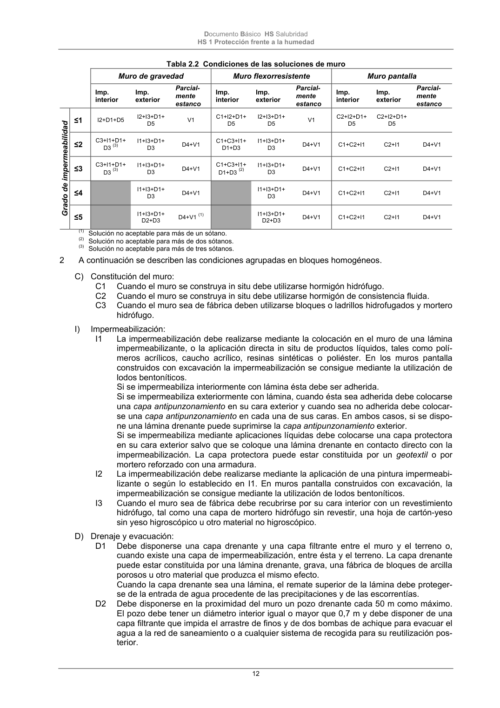

DB-HS · Página 12 · versión 2022-06-14
SHA256: 68df3caacc95f71aee2ec1ba7b2c65ae66155c21e3a8785521b8fdd4fd640d3b · página física 12 de 184 · métodos de encabezado
solo si están cotejados.
Formatos: Markdown · JSON de bloques · PDF p. 12 · imagen PNG
Documento Básico HS Salubridad HS 1 Protección frente a la humedad 12 Tabla 2.2 Condiciones de las soluciones de muro (1) Solución no aceptable para más de un sótano. (2) Solución no aceptable para más de dos sótanos. (3) Solución no aceptable para más de tres sótanos. 2 A continuación se describen las condiciones agrupadas en bloques homogéneos. C) Constitución del muro: C1 Cuando el muro se construya in situ debe utilizarse hormigón hidrófugo. C2 Cuando el muro se construya in situ debe utilizarse hormigón de consistencia fluida. C3 Cuando el muro sea de fábrica deben utilizarse bloques o ladrillos hidrofugados y mortero hidrófugo. I) Impermeabilización: I1 La impermeabilización debe realizarse mediante la colocación en el muro de una lámina impermeabilizante, o la aplicación directa in situ de productos líquidos, tales como polí- meros acrílicos, caucho acrílico, resinas sintéticas o poliéster. En los muros pantalla construidos con excavación la impermeabilización se consigue mediante la utilización de lodos bentoníticos. Si se impermeabiliza interiormente con lámina ésta debe ser adherida. Si se impermeabiliza exteriormente con lámina, cuando ésta sea adherida debe colocarse una capa antipunzonamiento en su cara exterior y cuando sea no adherida debe colocar- se una capa antipunzonamiento en cada una de sus caras. En ambos casos, si se dispo- ne una lámina drenante puede suprimirse la capa antipunzonamiento exterior. Si se impermeabiliza mediante aplicaciones líquidas debe colocarse una capa protectora en su cara exterior salvo que se coloque una lámina drenante en contacto directo con la impermeabilización. La capa protectora puede estar constituida por un geotextil o por mortero reforzado con una armadura. I2 La impermeabilización debe realizarse mediante la aplicación de una pintura impermeabi- lizante o según lo establecido en I1. En muros pantalla construidos con excavación, la impermeabilización se consigue mediante la utilización de lodos bentoníticos. I3 Cuando el muro sea de fábrica debe recubrirse por su cara interior con un revestimiento hidrófugo, tal como una capa de mortero hidrófugo sin revestir, una hoja de cartón-yeso sin yeso higroscópico u otro material no higroscópico. D) Drenaje y evacuación: D1 Debe disponerse una capa drenante y una capa filtrante entre el muro y el terreno o, cuando existe una capa de impermeabilización, entre ésta y el terreno. La capa drenante puede estar constituida por una lámina drenante, grava, una fábrica de bloques de arcilla porosos u otro material que produzca el mismo efecto. Cuando la capa drenante sea una lámina, el remate superior de la lámina debe proteger- se de la entrada de agua procedente de las precipitaciones y de las escorrentías. D2 Debe disponerse en la proximidad del muro un pozo drenante cada 50 m como máximo. El pozo debe tener un diámetro interior igual o mayor que 0,7 m y debe disponer de una capa filtrante que impida el arrastre de finos y de dos bombas de achique para evacuar el agua a la red de saneamiento o a cualquier sistema de recogida para su reutilización pos- terior. Muro de gravedad Muro flexorresistente Muro pantalla Imp. interior Imp. exterior Parcial- mente estanco Imp. interior Imp. exterior Parcial- mente estanco Imp. interior Imp. exterior Parcial- mente estanco Grado de impermeabilidad ≤1 I2+D1+D5 I2+I3+D1+ D5 V1 C1+I2+D1+ D5 I2+I3+D1+ D5 V1 C2+I2+D1+ D5 C2+I2+D1+ D5 ≤2 C3+I1+D1+ D3 (3) I1+I3+D1+ D3 D4+V1 C1+C3+I1+ D1+D3 I1+I3+D1+ D3 D4+V1 C1+C2+I1 C2+I1 D4+V1 ≤3 C3+I1+D1+ D3 (3) I1+I3+D1+ D3 D4+V1 C1+C3+I1+ D1+D3 (2) I1+I3+D1+ D3 D4+V1 C1+C2+I1 C2+I1 D4+V1 ≤4 I1+I3+D1+ D3 D4+V1 I1+I3+D1+ D3 D4+V1 C1+C2+I1 C2+I1 D4+V1 ≤5 I1+I3+D1+ D2+D3 D4+V1 (1) I1+I3+D1+ D2+D3 D4+V1 C1+C2+I1 C2+I1 D4+V1
